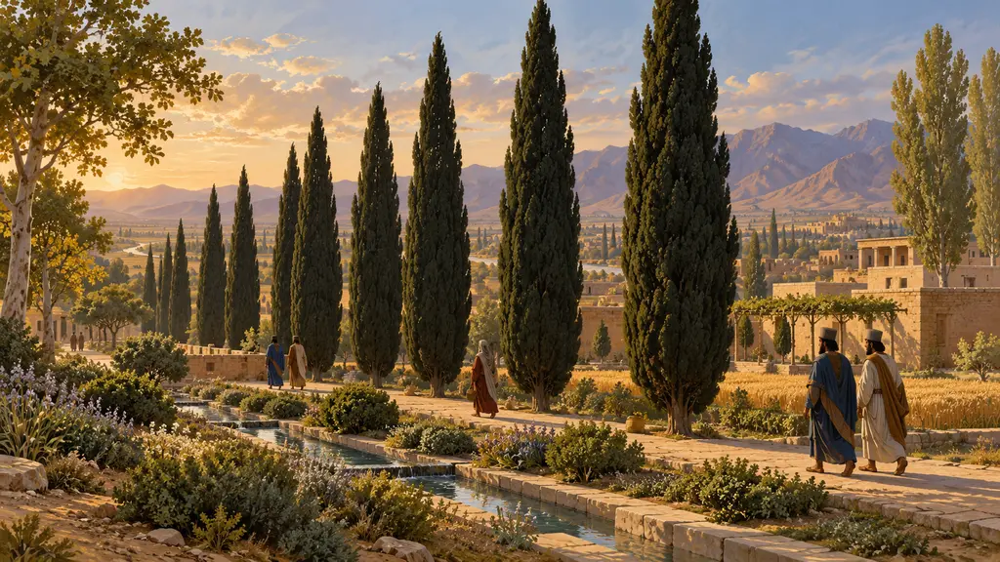
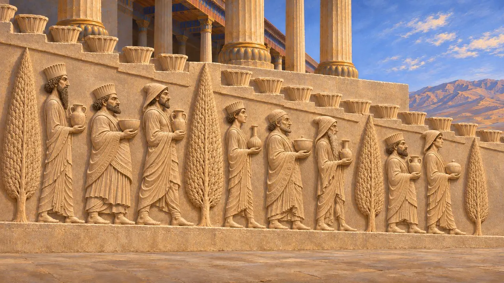
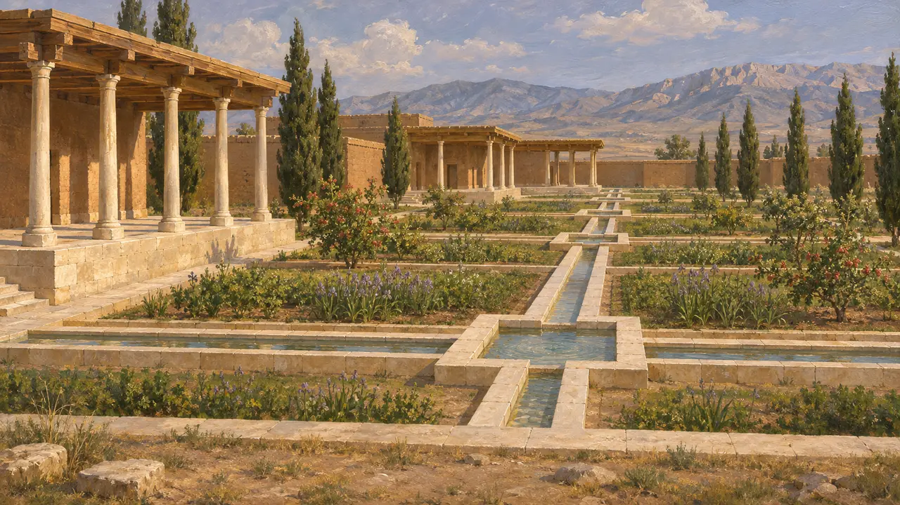
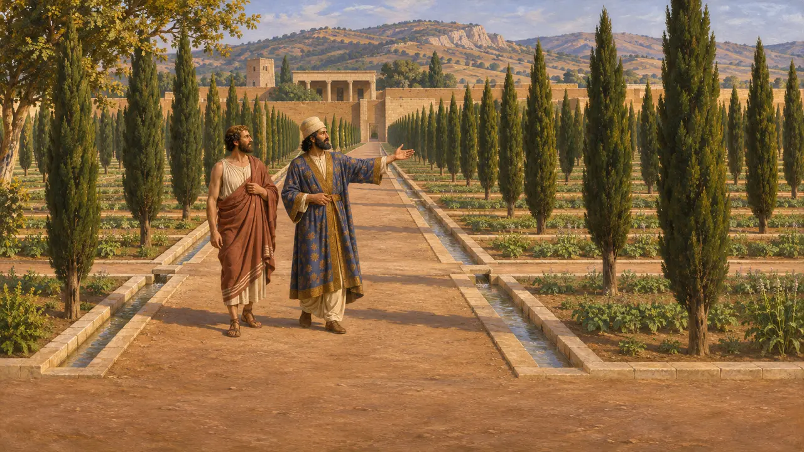
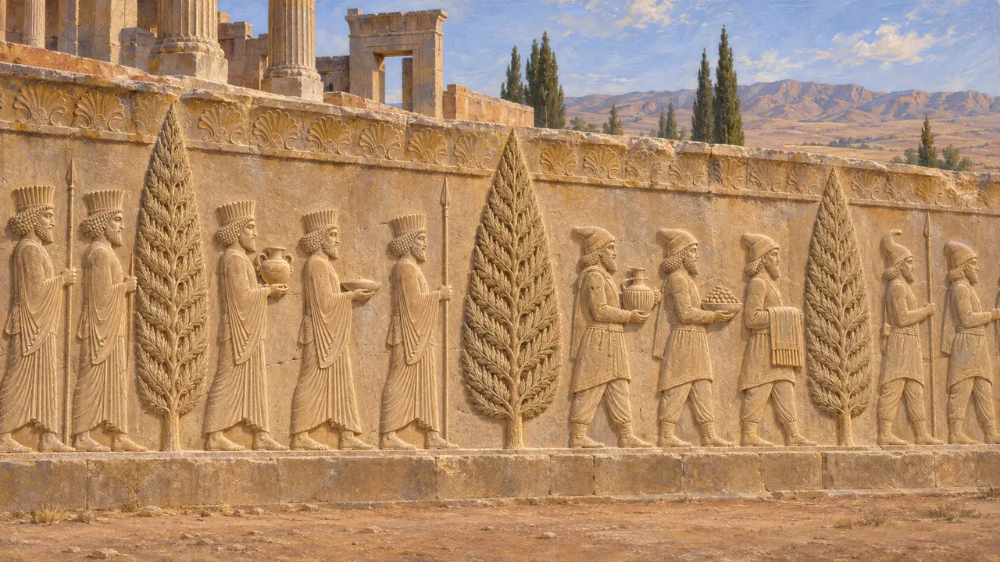
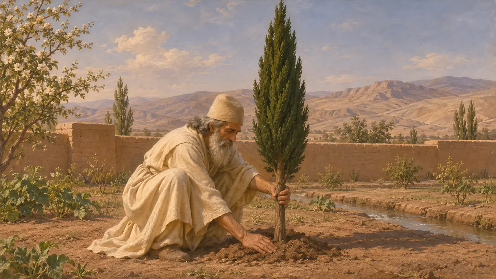

Filare di cipressi
Filari di conifere nell'arte e nei giardini achemenidi, Persepoli e Pasargade, 530-480 a.C.
Alberi sempreverdi alti e stretti, di solito identificati come cipressi, compaiono in filari sulle scalinate scolpite di Persepoli, dove separano le processioni dei popoli sottomessi. I Persiani disponevano inoltre i giardini in linee rette lungo i canali d'acqua. I filari dei rilievi sono probabilmente l'immagine più chiara giunta fino a noi di come apparisse alla corte una piantagione ordinata.
Nel gioco: Il gioco inserisce il Filare di cipressi tra i suoi edifici abitativi, come una fila di alti alberi scuri modellati su quelli tra le figure dei rilievi della scalinata dell'Apadana. Che gli alberi scolpiti siano cipressi è un'interpretazione probabile, non una certezza.

Alberi sulle scalinate dell'Apadana
Nelle fontiLe scalinate dell'Apadana di Persepoli, scolpite probabilmente sotto Dario e Serse, mostrano delegazioni dalle terre dell'impero che portano doni al Re. Alte e slanciate conifere si ergono tra i gruppi e separano una delegazione dall'altra. Alberi simili ricorrono altrove sulle facciate delle scale. L'Oriental Institute di Chicago portò alla luce i rilievi negli anni Trenta del Novecento, prima sotto Ernst Herzfeld e poi sotto Erich Schmidt, che li pubblicò.
E. F. Schmidt, Persepolis I, 1953

Giardini disposti in file
Nelle fontiA Pasargade, David Stronach ha scavato i canali d'acqua in pietra del giardino di Ciro. Lungo il loro corso si aprono a intervalli piccole vasche, e i canali incorniciano aiuole rettangolari accanto agli edifici del palazzo. Le piante non si sono conservate, quindi non si sa quali alberi crescessero lungo i canali. Le tavolette elamiche dell'archivio delle Fortificazioni di Persepoli usano partetaš per le tenute reali, un prestito dalla parola dell'antico persiano da cui deriva anche il greco paradeisos.
D. Stronach, Pasargadae, 1978; W. Henkelman, The Other Gods Who Are, 2008

I filari diritti di Senofonte
Racconto anticoSenofonte racconta come lo spartano Lisandro fece visita a Ciro il Giovane a Sardi verso la fine del V secolo. Lisandro ammirò il parco perché i suoi alberi erano disposti in file diritte ad angoli regolari, e Ciro disse di averlo misurato lui stesso e di aver piantato alcuni alberi con le proprie mani. L'episodio è posteriore al periodo del gioco e non nomina gli alberi, ma mostra che i filari ordinati erano un segno distintivo del giardino reale persiano.
Xenophon, Oeconomicus 4.20-25

Quale albero, e che cosa significava
ContesoGli alberi scolpiti sono stilizzati. Di solito vengono interpretati come cipressi mediterranei, che crescono nella regione, ma alcuni preferiscono vedervi una conifera generica o un pino. Nessun testo achemenide li spiega. Alcuni autori moderni li leggono come simboli della vita sempreverde o del giardino reale, mentre altri li considerano soprattutto un espediente per suddividere le lunghe processioni in gruppi.
M. C. Root, The King and Kingship in Achaemenid Art, 1979

Il cipresso di Kashmar
Leggenda posterioreUna tradizione persiana molto più tarda fece del cipresso un albero sacro. Lo Shahnameh di Ferdowsi, completato intorno al 1010 d.C., narra che Zoroastro piantò un cipresso a Kashmar, e scrittori successivi sostennero che un califfo lo fece abbattere. Queste storie furono messe per iscritto ben oltre mille anni dopo Dario e non dicono nulla di attendibile sulle piantagioni achemenidi.
Ferdowsi, Shahnameh
Fonti
- E. F. Schmidt, Persepolis I, 1953
- D. Stronach, Pasargadae, 1978
- Xenophon, Oeconomicus 4.20-25
- M. C. Root, The King and Kingship in Achaemenid Art, 1979
- W. Henkelman, The Other Gods Who Are, 2008
- P. Briant, From Cyrus to Alexander, 2002